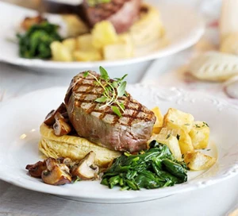

The Easy Recipe of Western cuisine
Spaghetti & meatball
Ingredients
-
8 good-quality pork sausages
-
1 kg beef mince
-
1 onion, finely chopped
-
½ a large bunch flat-leaf parsley, finely chopped
-
85g parmesan, grated, plus extra to serve (optional)
-
100g fresh breadcrumbs
-
2 eggs, beaten with a fork
-
spaghetti, to serve (about 100g per portion)
-
3 tbsp olive oil
-
4 garlic cloves, crushed
-
4 x 400g cans chopped tomatoes
-
125ml red wine (optional)
-
3 tbsp caster sugar
-
½ a large bunch of flat-leaf parsley, finely chopped
-
few basil leaves (optional)
Step
-
Split the skins of the sausages and squeeze out the meat
into a large mixing bowl.
-
Add seasoning and mix it with your hand.
-
Heat the oven to 220C/200C fan/gas 8 and roll the mince
-
Drizzle with a little oil (about 1 tsp per portion), shake to
coat, then roast for 20-30 mins until browned.
-
Heat the olive oil in a large saucepan and add the garlic
cloves and sizzle for 1 min.
-
Stir in the chopped tomatoes, red wine, if using sugar,
parsley and seasoning (15-20 mins)
-
Spoon the sauce and meatballs over spaghetti
Steak with mushroom puff tartlets

Ingredients
-
100g puff pastry
-
1 tbsp olive oil, plus a little extra
-
1 shallot, finely chopped
-
100g chestnut mushroom, chopped
-
1 tsp chopped thyme, plus sprigs to decorate
-
3 tbsp port or Madeira
-
1 tbsp double cream
-
2 fillet steaks, about 140g/5oz each
Step
-
Heat oven to 200C/fan 180C/gas 6. Roll out
the pastry.
-
Score a circle 2cm in from the edge, then prick
the pastry inside the border.
-
Lift onto a baking tray, then bake for 20-25
mins or until golden and puffed.
-
Heat the oil in a pan, add the shallots, then
fry until softened.
-
Add the mushrooms and thyme, then fry until
mushrooms are softened and any liquid almost
gone.
-
Add the port or Madeira, then bubble for 2 mins.
-
Add the cream, simmer for 1 min more until the
sauce is slightly thickened, then set aside.
-
Rub the steaks with a little oil and seasoning,
heating a griddle pan until hot, then cook the steaks
for 2-3 mins on each side.
-
Set the tartlets on warm plates, then spoon over
the mushroom mixture.
Egg benedict
Ingredients
-
3 tbsp white wine vinegar
-
4 free-range eggs
-
2 toasting muffins
-
4 parma ham
-
125g butter
-
2 egg yolks
-
½ tsp white wine vinegar or tarragon vinegar
-
squeeze of lemon juice
-
pinch of cayenne pepper
Step
-
Combine ingredients in a large bowl.
-
Add seasonings and bring to a simmer until
it become smmoth.
-
Put butter in a large non-stick frying pan
over a medium-low heat and
cook until melted and foaming.
-
Pouring 2 tbsp of the mixture into the pan
and shape it into round disx.(2-3 mins on the
first side and another 1 min)
-
Bring a large pan of water to boil. crack
each egg into a ramekin, and carefully lower
onto the water.
-
Stack the pancake with a layer of
hollandaise, the ham and spinach leaves in
between them,then top with a poached egg.
Garlic Butter Thanksgiving Turkey
Ingredients
- Butter
- Smoked paprika
- Basil
- Oregano
- Garlic
- Lemon
- Orange wedges
- Shallots
- Fresh herbs
- Chicken broth
Step
-
Preheat the oven to 350F. Prepare a large roasting pan.
Remove the turkey from its packaging and
remove the giblets and neck. Place the turkey onto a wire rack
placed over a baking sheet to catch any drippings.
Pat the turkey dry with paper towels. Using a small rubber spatula,
or the back of a spoon, separate the skin away from the
turkey breast, taking care not to puncture the skin.
-
Prepare the herbed butter spread. In a mixing bowl,
combine the softened butter, salt and all
the spices. Mix until well combined. For easier spreading, heat
the butter in the microwave for 20 to 30 seconds,
until it's a bit runny.
-
Spread the butter underneath the turkey skin, inside
and all over, coating it well. Stuff the
turkey with the citrus fruit, garlic, herbs and shallots. Next,
use twine to truss the turkey.
-
Bake the turkey in the preheated oven, using my above
chart for timing. At the 2 hours baking
mark, baste the turkey with the 1/2 cup melted butter using a
pastry brush. Pour in a cup or two of chicken broth
into the roasting pan, to add moisture to the oven. Continue baking,
basting one more time 30 minutes before the turkey is
done and once you remove it from the oven.
-
Roast the turkey until the internal temperature measured
at the thickest part of the thigh
measures 165F.
-
tent the turkey with foil and let it rest for 20 minutes.
Use a sharp knife and carving fork
to carve the turkey.